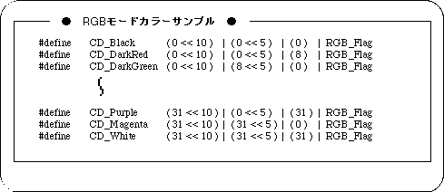

Return to previous page | Return to menu | Go to next page
Here, the flow until the actual drawing of the scroll screen after the scroll function setting and scroll registration is completed will be explained in the order of the library functions to be used.
● Back screen settings
Select the color of the back screen.
The back screen is a single-color display surface that is displayed on the back of the monitor and is displayed on the area where nothing is drawn (in dots).
The library function “slBack1ColSet” is used to set the back screen.

Note) The above values are defined in “sl_def.h”.